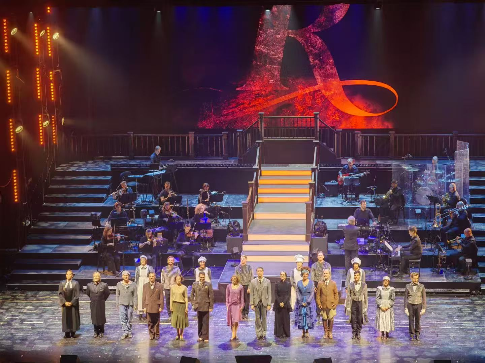
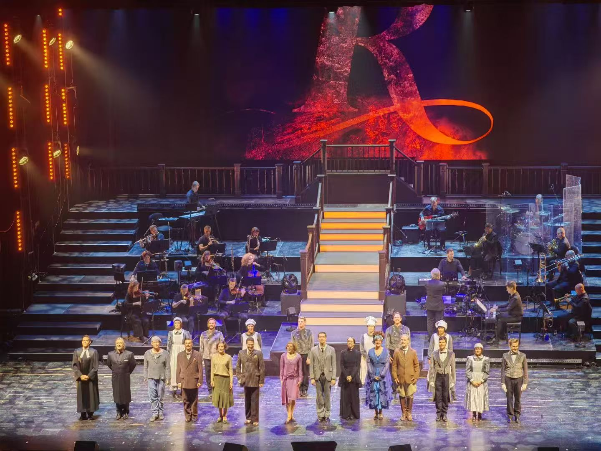

坎坷而深刻的舞台体验
之前一直喜欢看剧，话剧、舞台剧、音乐剧、交响音乐会都有涉及，不过个人更喜欢音乐剧一些，从法红与黑、法扎、莫里哀（明年订票去），到德扎、伊丽莎白、蝴蝶梦，几乎看了个遍，自学了一丢丢德语、在学校学了法语，不为别的，就为了看剧；相反，话剧的兴趣可能没那么大。
 
偶然进入话剧社
进入这个地方的原因多种多样，有为了扩(ren)大(shi)社(mei)交(zi)的，有喜欢搞剧的，像我这种陪好兄弟去玩结果兄被刷了我进去的还是蛮少见的。整体氛围活泼，只不过好像老东西和新一届有点矛盾，我也不想掺和，现在看来，有一丝后悔、一分无奈、和一点愤怒，这也是后话了。
主角竟是我？
作为完全零经验小白，被迫出演《控方证人》的威尔爵士，链接https://www.bilibili.com/video/BV1Rb4y1371f
一直想着结束后说点啥感想，恰逢一周年吧，又看了看自己演的话剧的录播，其实感触颇多。记得学姐说：
“你可以出师啦”
是吗？或许是吧，一个没有经验的小白，至少完完整整的演完了2个小时；从坐排天天挨骂，念台词被各种批斗；从第一次写人物小传被当众处刑破防，记得好像是第12周，那一周家族企业管理一共写了9000多字的报告，智能车队要验收，信发的好多活动需要我策划，即使是在这种情况下，我依然从头再造的写完了1w多字的人物小传。为了话剧，我放弃了许多，最可惜的莫过于时间不足先是在无人机队招新时中途退出，再是放弃了智能车队验收，没有办法，没有资格去参加明年的飞思卡尔了。
后悔吗？不后悔。
为了排练，我牺牲了时间；每次排练都全勤，一次迟到也没有，甚至连加练都是提前10分钟到，每次除了在工作里挨骂就是被剧组屌，有的时候感觉真的难绷但是还是挺过来了。12月9日有ai有e的活动，那天我记得我上下楼走了2万多步，很累。唯一高兴的事情就是中午吃饭的时候见到了控方证人的海报，那天结束边收拾实验室，边拿着麦克风背台词、练台词；第一个剧本，翻的次数太多，皱的不成样子，于是我自己又印了一个。多少日夜，多少排练，多少绕口令，回忆涌上心头，可惜曾经的朋友居然因为理念不同反戈相向，惋惜、痛心。
学好声韵辨四声，阴阳上去要分明， 部位方法须找准，开齐合撮属口形。 双唇班抱必百波，抵舌当地斗点钉， 舌根高狗工耕故，舌面机结教坚精， 翘舌主争真志照，平舌资责早在增。 擦音发翻飞分复，送气查柴产彻称。 合口忽午枯胡鼓，开口河坡哥安争。 嘴撮虚学寻徐剧，齐齿衣优摇业英。 抵颚恩音烟弯稳，穿鼻昂迎中拥生。 咬紧字头归字尾，不难达到纯和清。
仍记得定妆照那天赶完ddl就睡了三个小时；早上穿着戏服上课当显眼包，中午没吃饭就去拍照，结果因为负责的同学没有提前对接被赶了出来。下午提前做完实验赶到现场，依稀记得女搭档们忙前忙后给我化妆的样子，仍然记得学姐顶着发烧来给我们拍照……太多太多瞬间。
临门一脚
前几天晚上最后一次联排，相当于演习。整体很仓促，大家都容易着急；导演也急，期待最后一天能超常发挥。
早上8点半到活动中心搬东西，我一个“老头”还得一步一步从那里把门扛到新传剧场，早上多亏三个小煎饺，中午饭贼清淡吃了几口就扔了，眯了几分钟还被吵醒；快彩之后，蹬去明德做发型＋戴隐形，来回就用了14分钟；彩排后才开始化妆，化完之后还没有歇口气就又要正式演出……
在聚光灯下
演出很顺利，起初面对聚光灯手抖的不行，逐渐到泰然自若、享受掌声，这是这段时间的成长。剧组每个人都很辛苦，在这短短的一个月每个人都舍弃了不少，但是收获的更多。有很多感动，很多欢乐，很多友谊，以及那天晚上的牛肉煲真他娘的香！
岁月不居，时节如流。
所以，青春永不落幕，对吗？